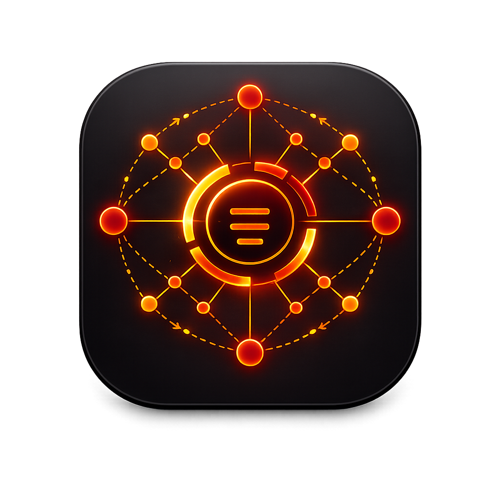
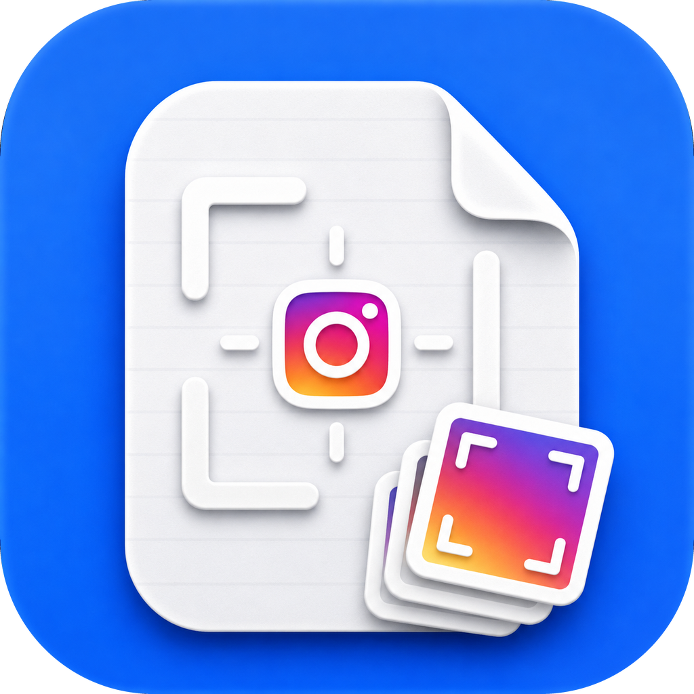
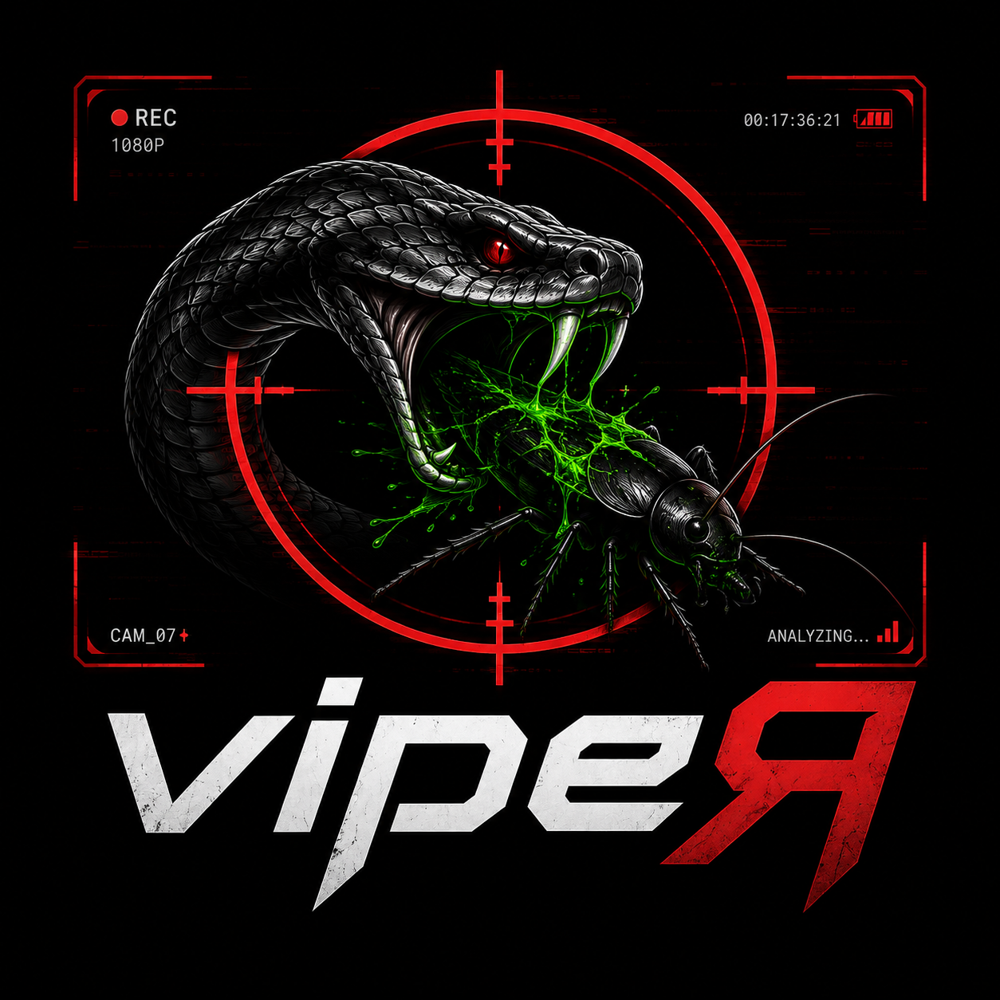
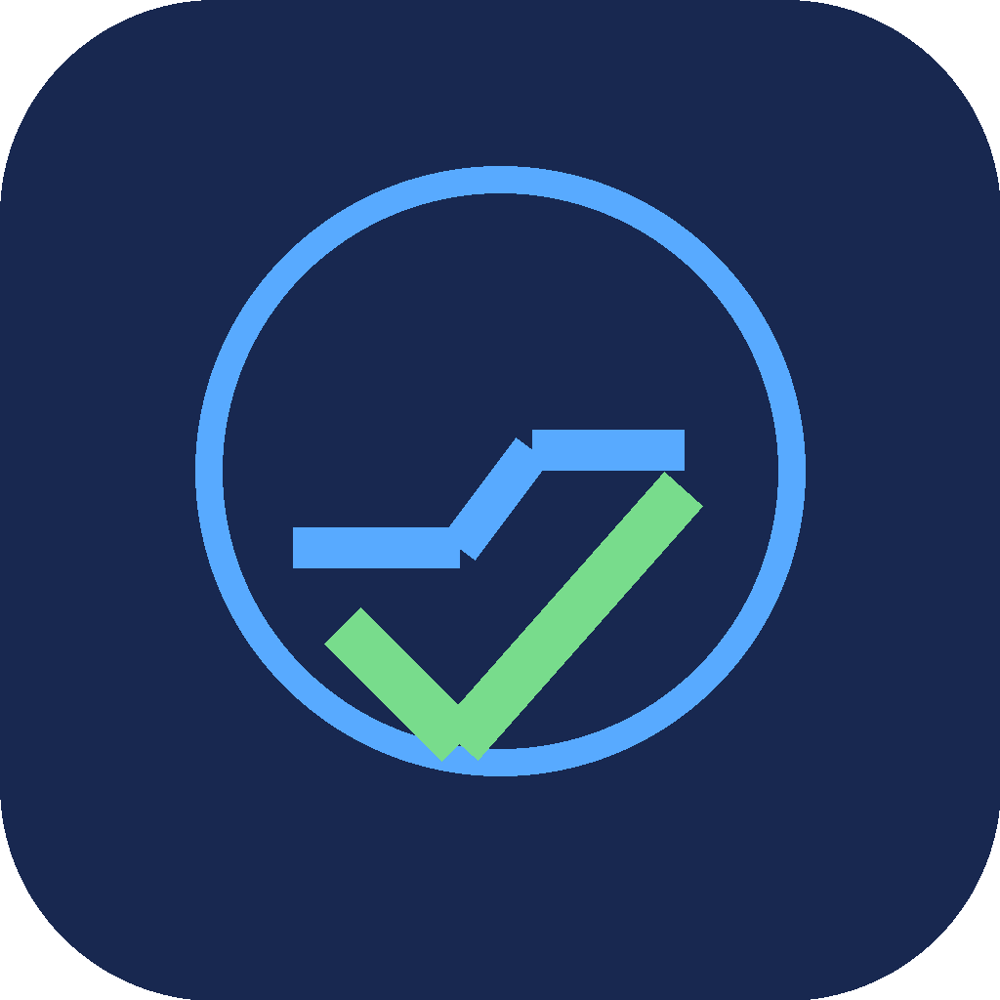

NoteCortex
ALPHAEspace macOS qui réunit notes, tâches et agenda dans une interface unique.
Retrouvez rapidement vos priorités et restez concentré sur l'essentiel.
_ _ _____ _ _ ____ ___ _____ ___ ____ ____ _____ | \ | | ____| | | | _ \ / _ \| ___/ _ \| _ \ / ___| ____| | \| | _| | | | | |_) | | | | |_ | | | | |_) | | _| _| | |\ | |___| |_| | _ <| |_| | _|| |_| | _ <| |_| | |___ |_| \_|_____|\___/|_| \_\\___/|_| \___/|_| \_\\____|_____|
Des applications macOS conçues pour capturer, organiser, créer et travailler plus simplement. Tous les accès publics passent par GitHub.
Espace macOS qui réunit notes, tâches et agenda dans une interface unique.
Retrouvez rapidement vos priorités et restez concentré sur l'essentiel.
Tableau de bord qui rassemble les informations essentielles de l'écosystème NoteCortex.
Visualisez votre activité et vos priorités depuis un écran unique.
Ensemble d'outils qui relie les usages de NoteCortex et de NotePlan.
Gardez vos notes et vos outils de travail dans un flux cohérent.
Service de synchronisation entre les données NCTx et les notes NotePlan.
Retrouvez les mêmes informations sans effectuer de doubles saisies.

Moteur applicatif expérimental dédié aux outils cognitifs de NeuroForge.
Fournit une base commune pour créer des applications plus cohérentes.
Outil de capture qui envoie textes, liens et sélections directement vers NotePlan.
Conservez une information sans interrompre votre navigation ou votre travail.
Studio photo qui organise les souvenirs de voyage par lieux, albums et parcours.
Transformez votre photothèque en récit de voyage facile à explorer.

Application de recadrage et d'export par lot pour les formats des réseaux sociaux.
Préparez plusieurs images cohérentes en une seule opération.

Application d'analyse locale destinée à mieux comprendre les événements vidéo.
Repérez plus rapidement les séquences qui méritent votre attention.

Utilitaire qui identifie les entrées inutiles du menu Ouvrir avec de macOS.
Retrouvez un menu plus propre et choisissez vos applications plus vite.
Projet expérimental NeuroForge consacré à l'exploration de nouveaux usages.
Teste rapidement de nouvelles idées avant leur intégration dans un produit.
Atelier de création d'expériences visuelles interactives inspirées par la demoscene.
Transformez rapidement une idée créative en démonstration visuelle partageable.
Utilitaire qui crée des raccourcis macOS ouvrant directement une note NotePlan.
Accédez à vos notes importantes depuis le Finder ou le Dock.